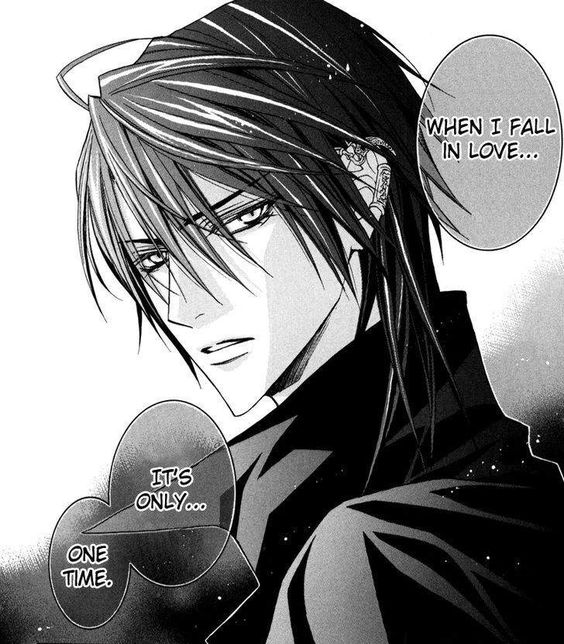
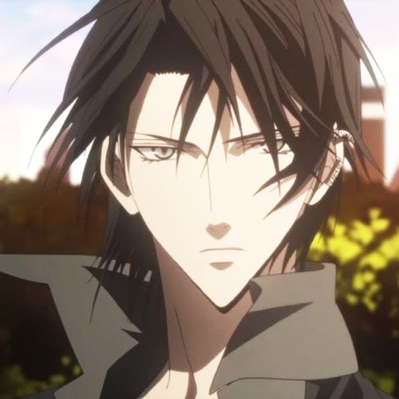
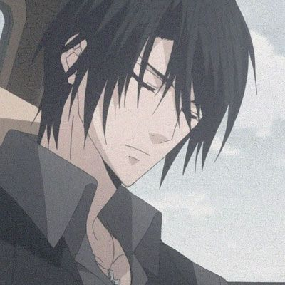
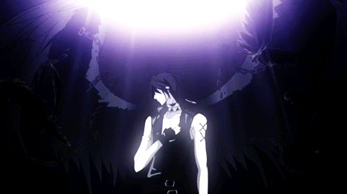

Anime Passion
Anime Passion
Luka Crosszeria
Luka Crosseria (ルカ＝クロスゼリア Ruka Kurosuzeria), también conocido como Zess, es un demonio (Duras) de nivel Opast afiliado al Clan Giou. Más tarde, se descubre que él fue el amante de Yuuki Giou en su vida pasada.
Apariencia

Al ser un demonio, Luka es una persona extremadamente hermosa y atractiva para un ser humano normal, por lo que atrae mucho la atención allá donde vaya, especialmente para las mujeres. Su cuerpo es delgado pero musculoso, con una altura destacable. Según Tachibana Giou, los demonios tienen un atractivo deslumbrante para atraer a los humanos, aunque Luka nunca ha usado su aspecto físico para este fin y parece no importarle ese tipo de cosas.
Su cabello es sedoso, de color negro como el carbón, piel blanca casi transparente y ojos grisáceos. Además, Yuuki Giou y Touko Murasame señalaron que Luka huele muy bien, a pesar de no llevar ningún tipo de perfume.
En cuanto a su vestimenta, el color predominante es el negro, y se le ve principalmente usando un abrigo largo sin mangas, pantalones, cinturón, zapatos y gargantilla del mismo color. Aparte de eso, también tiene un estigma por todo su brazo de unas tres cruces rojas como señal de traición hacia los demonios. Toda su familia también porta este estigma.
Personalidad

Luka tiene una actitud distante y compuesta, siendo casi indiferente con todos menos con Yuuki, a quien dedica toda su vida. En realidad, parece alguien atemorizante y violento, pero no es alguien que actúa por impulsividad y prefiere mantenerse al tanto de la situación si no es algo que tenga que ver directamente con Yuuki.
Aunque por lo general es callado y apático, cuando se enoja, su poder vuela hasta niveles que se pueden sentir desde muy lejos. No confía en nadie y le gusta hacer las cosas a su manera, ya que siempre ha estado solo. Es posible que solo se haya unido al Clan Giou por el bien de Yuuki, ya que parece sentir desagrado hacia Takashirou Giou y hasta le amenazó con matarle si se atrevía a poner a éste en peligro. Con los demás Zweilt mantiene una relación fría y distante, pero parece que cada vez les entiende mejor y han estrechado un poco de lazos entre ellos, todo gracias a Yuuki.
Luka también destaca por ser alguien increíblemente fiel y le ha jurado en varias ocasiones que le protegerá y que nunca le traicionará, pase lo que pase. Yuuki es la única persona con la que muestra un lado de sí más suave y siempre está al tanto de su salud y de su seguridad, incluso muestra un poco de celos y de desagrado cuando algunos de los Zweilt se pasan de cariñosos.
Historia

Fue considerado un esclavo porque nació en el clan Crosszeria (también conocido como el "Clan Traidor"), ya que uno de ellos decidió vender los verdaderos nombres de los demonios a los humanos. Para un Duras, que alguien conozca su es lo mismo que ser esclavizado.
El rey de los demonios era dueño de Luka, y como símbolo de esto, formó un pacto permanente al poner su propia sangre en la Marca Zess de Luka., convirtiéndose en rojo (otras marcas aparecen de color marrón oscuro) y causando a Luka una gran cantidad de dolor durante el proceso.
Años más tarde, Luka sigue obsesionado por el recuerdo y se siente físicamente enfermo al recordarlo. Debido al pacto, si Luka alguna vez traicionara al rey demonio, él moriría, pero él hizo un nuevo contrato con Yuuki Giou, anulando su contrato anterior con el rey demonio. Sin embargo, Luka insinúa que el contrato anterior con el rey demonio no puede anularse por completo siempre que su brazo lleve la "cruz sangrienta".
Hablidades

Telequinesis: Habilidad para manipular y controlar objetos con la mente, frecuentemente de forma no visibles para el ojo humano normal, el huzo escesivo de este poder causa fuertes dolores de cabeza que pueden causar hasta la muerte en casos muy excesivos.
Visión nocturna: Es la habilidad de poder ver en la oscuridad en los entornos que están en bajos niveles de iluminación.
Energía demoniaca
Opening
Créditos
- https://uragiri-wa-boku-no-namae-o-shitteiru.fandom.com/es/wiki/Luka_Crosszeria
- https://i.pinimg.com/564x/c2/88/25/c28825174e0bcc909b7c7c08a2386f19.jpg
- https://i.pinimg.com/564x/49/58/25/4958258b86f37e6c58be1ce3c85c919a.jpg
- https://i.pinimg.com/originals/41/b1/a5/41b1a53c65fd8de1452f1f0690ef49d5.gif
- https://www.youtube.com/watch?v=9bkXwKTyClM